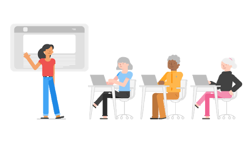

Contenido
Leccion 1
La web o World Wide Web es un sistema que funciona a través de Internet por el cual se pueden transmitir diversos tipos de datos a través del Protocolo de Transferencia de Hipertextos o HTTP, que son los enlaces de las páginas web. Es conveniente entender las diferencias entre un website y una página web.
El primero es una localización en la World Wide Web que contiene documentos (páginas web) organizados jerárquicamente.
Cada documento (página web) contiene texto y o gráficos que aparecen como información digital en la pantalla de un dispositivo.
Tim Berners-Lee es considerado el padre de la Web ya que desarrolló: HTML, HTTP, URL
Las páginas Web son documentos que hacen uso del Hipertexto y la Hipermedia.
Un ENLACE es una URL
Lección 2
La curva de aprendizaje depende de cada persona. Al inicio, al no saber nada, todo suma y la sensación de aprendizaje es rápida.
En un segundo momento esta sensación disminuye dada la marea de información.
Por último, hay un punto de inflexión en el que la sensación de aprendizaje aumenta exponencialmente gracias a la capacidad de conectar conceptos, avanzando hacia el dominio en cualquier disciplina. Con tiempo y esfuerzo todos podemos llegar a dominar cualquier materia.
Comprueba tus conocimientos
Lucía está en el centro de mayores de la Calle Barquillo de Madrid. Va a dar una clase a un grupo de personas mayores ya que tienen cierta soltura en entornos digitales. Los temas que van a tratar son las diferencias entre internet y la web.
Selecciona, de entre las diferentes opciones, cuáles de ellas hacen referencia a web
- Hipertexto
- Hipervínculo
- Enlace
- Hipermedia
- Urls
- IP
Erika lleva unos meses aprendiendo desarrollo web. Ahora que tiene los conceptos básicos, ha decidido profundizar pero se ha entristecido al ver la inmensa cantidad de documentación que existe al respecto, está frustrada y le comenta a su amigo Juan, experto desarrollador, que va a abandonar.
Juan la entiende perfectamente y le está explicando cómo han sido las fases de su aprendizaje hasta que ha llegado a tener el nivel actual.
Indica, de las siguientes afirmaciones, cuales corresponden a lo que Juan le ha explicado a Erika sobre su proceso de aprendizaje.
- Hay un punto de inflexión en el que todos abandonan
- Hay un punto de inflexión en el que todo lo aprendido se conecta.
- Se domina de forma rápida y sin esfuerzo
- El dominio requiere tiempo y esfuerzo.